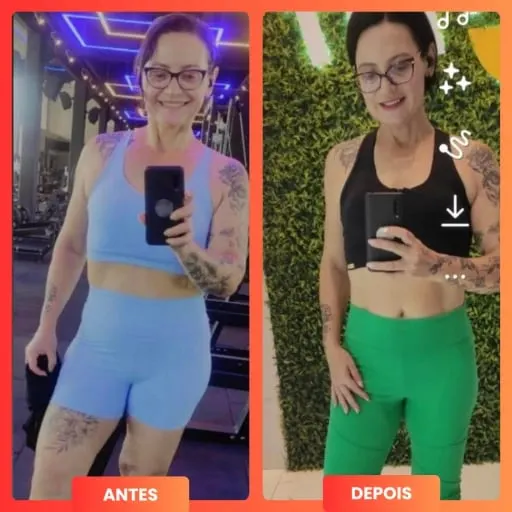

Nossas alunas se priorizaram com o Desafio Magra Pro Max




Arraste para o lado →
Com treinos rápidos, na academia ou em casa, e uma alimentação saborosa. Sem dieta restritiva e sem 1.000 abdominais.
Baseado em mais de 12.000 transformações reais com o Desafio Magra Pro Max
Assista com som: a Millena explica o desafio

Arraste para o lado →
Os métodos antigos, muito cardio e quase nada de comida, destroem a sua massa magra e deixam o metabolismo lento. Resultado: o corpo segura a gordura justamente na barriga.
E os abdominais tradicionais podem até “estufar” a cintura, em vez de afinar.
Não é você que é fraca. Você só não precisa fazer mais. Precisa fazer do jeito certo.
Agora eu te pergunto…
Se você pudesse secar a barriga e afinar a cintura enquanto define coxas e bumbum, com treinos rápidos e comendo comida de verdade, você seguiria o plano até o fim?
Se a resposta é sim, o Desafio Magra Pro Max foi feito para você.
Nada de treinar aleatório. Você treina com estratégia e progressão, para definir do jeito certo, na academia ou em casa.
A técnica de hipopressivos que substitui 1.000 abdominais e afina a sua cintura real.
Você não precisa fazer mais. Precisa fazer do jeito certo.
Comida de verdade, para perder gordura e ganhar massa muscular sem passar fome.
Se você se identificou com pelo menos 2 itens, o seu próximo passo está logo abaixo.

De R$ 197,00
por apenas 12x de
R$ 3,08
ou (CONFIRMAR: preço à vista) à vista
Quero começar meu desafioAcesso imediato · Garantia de (CONFIRMAR: 21 ou 30) dias
Continuar no cardio sem fim, nos abdominais e na comida cortada, olhando no espelho e vendo a mesma barriga.
Seguir o Desafio Magra Pro Max, secar a barriga, afinar a cintura e definir o corpo do jeito certo.
Você já sabe onde a opção 1 te leva.
Escolha a opção 2 hoje.
(ESCREVER AQUI: formação da Millena e a história dela em 4 a 6 frases: onde ela estava, o que tentou e não deu certo, o que descobriu, o resultado dela)
Hoje são mais de 12.000 transformações com o Desafio Magra Pro Max.
Você não precisa de mais uma tentativa. Precisa de um método para seguir até o fim.
Agora é a minha vezSim. O plano foi feito para secar a barriga enquanto define coxas e bumbum, na academia ou em casa.
Sim. Seja ganhando peso rápido, seja tendo dificuldade para ganhar massa, o que você precisa é da abordagem certa para o seu corpo. É isso que o desafio entrega.
Não é dieta restritiva. É alimentação saborosa, com comida de verdade, sem passar fome.
Os treinos são rápidos e o hipopressivo leva 10 minutos. (CONFIRMAR: duração média dos treinos)
Não do jeito tradicional. Você usa a técnica de hipopressivos, que substitui 1.000 abdominais e afina a cintura.
O acesso é imediato depois da compra. (CONFIRMAR: chega por e-mail? em qual app/área?)
(CONFIRMAR: pagamento único? por quanto tempo fica o acesso?)
(CONFIRMAR: prazo de 21 ou 30 dias e a regra)